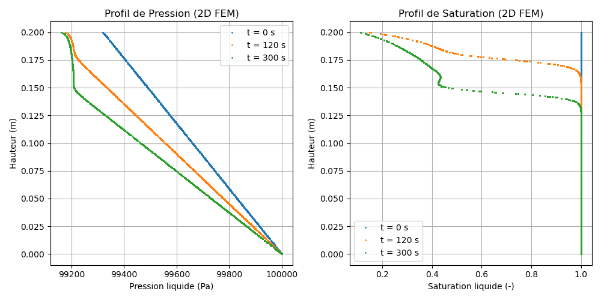

M10 Model — Richards Equation: gravity drainage of a bead column (2D)
Source files:
src/Models/ModelFiles/M10.c·test_examples/M10-2/M10-2·test_examples/M10-2/M10-2.msh·test_examples/M10-2/billesBil model author: P. Dangla (Université Gustave Eiffel)
Table of contents
- Context and objective
- Assumptions
- Variables and notation
- Mathematical model
- 4.1 Conservation equation
- 4.2 Vectorial Darcy flux law
- 4.3 Retention curve and relative permeability
- 4.4 Condensed form — Richards equation
- Boundary and initial conditions
- Test case: two-dimensional bead column (
test_examples/M10-2) - Results
- 2D Finite Element numerical discretization
- Bibliographic references
1. Context and objective
The M10 model solves the Richards equation for single-phase liquid water flow in a partially saturated porous medium. The gas phase is assumed at constant pressure; only the liquid pressure \(p_l\) is the unknown.
In this specific case test_examples/M10-2, the modeling reproduces the gravitational drainage of a glass bead column, but now on a two-dimensional (2D) plane. The purpose of this test is to validate the behavior of the purely local integration of M10's Finite Element Method (FEM) on an imported unstructured mesh (M10-2.msh), unlike the M10-1 case which was only a one-dimensional discretization generated on the fly.
Although the mesh has a width (coordinate \(x \in [0, 0.01]\) m), the absence of transverse loads or gradients guarantees strictly vertical flow along the \(y \in [0, 0.2]\) m axis.
| Base parameter | Value |
|---|---|
| Porosity \(\phi\) | 0.38 |
| Intrinsic permeability \(k_\text{int}\) | \(8.9 \times 10^{-12}\) m² |
2. Assumptions
- Single-phase liquid 2D: The vectorial resolution is performed on a plane \((x,y)\). The gas pressure is set at a constant ceiling \(p_g = 10^5\) Pa.
- Isothermal: Constant viscosity and densities.
- Rigid porosity: \(\phi = \text{constant}\).
- Vectorial gravity: \(\mathbf{g} = (0, -9.81)\) m/s² oriented downward.
3. Variables and notation
Primary nodal unknown
| Symbol | Meaning | Unit |
|---|---|---|
| \(p_l\) | 2D liquid phase pressure \(p_l(x,y)\) | Pa |
Local dynamics (Gauss points) are managed using capillary pressure \(p_c = p_g - p_l\).
Secondary variables
| Symbol | Meaning |
|---|---|
| \(s_l(p_c)\) | Liquid water saturation degree |
| \(k_{rl}(p_c)\) | Weighting relative permeability |
| \(m_l\) | Local water content |
| \(\mathbf{W}_l\) | Liquid flux vector \((W_{lx}, W_{ly})\) |
4. Mathematical model
4.1 Conservation equation
Mass balance on the two-dimensional finite element control volume:
4.2 Vectorial Darcy flux law
The flux is driven by the general head, accounting for both gradient degrees:
$\(\mathbf{W}_l = -K_l\,\left( \begin{pmatrix} \frac{\partial p_l}{\partial x} \\ \frac{\partial p_l}{\partial y} \end{pmatrix} - \rho_l \begin{pmatrix} 0 \\ g_y \end{pmatrix} \right)\)$ (where \(g_y = -9.81\))
The dependence of the effective coefficient \(K_l = \frac{\rho_l\,k_\text{int}\,k_{rl}(p_c)}{\mu_l}\) on the local field \(p_c\) directly drives the nonlinear frontal progression.
4.3 Retention curve and relative permeability
The glass bead medium exhibits extremely sudden desaturation. Its test curve is transcribed in test_examples/M10-2/billes.
| Quantity | Value | Description |
|---|---|---|
| \(p_{c,\text{entry}}\) | ≈ 500 Pa | Characteristic air-entry pressure |
| \(s_{l,\text{max}}\) | 1.0 | Full saturation below 500 Pa |
| \(s_{l,\text{residual}}\) | ≈ 0.09 | Total hydraulic void at ~1000 Pa |
4.4 Condensed form — Richards equation
Variable substitution leads to the classical Jacobian system for Newton's method:
The variable \(C(p_c)\) (matrix capacity) is the product \(-\rho_l\,\phi\,\partial s_l/\partial p_c\).
5. Boundary and initial conditions
Initial conditions: the Field call in M10-2
The column is not filled in a stabilized hydrostatic regime with gravity, but with a simple linear decrease over Y to impose a heavy initial draining flux:
(M10-2 file: Val = 1.e5 Grad = 0 -3400 Poin = 0 0)
$\(p_l(x,\,y,\,t=0) = p_{l0} + G_{y}\,y\)$ With \(p_{l0} = 10^5 \text{ Pa}\) and \(G_y = -3400 \text{ Pa/m}\).
| Geometric boundary | \(y\) [m] | \(p_l(t=0)\) [Pa] | \(S_l(t=0)\) [-] |
|---|---|---|---|
| Base (Reg 1) | 0 | \(10^5\) | 1.000 |
| Free top | 0.2 | \(9.932 \times 10^4\) | ≈ 0.9998 |
Note on \(X\): Every \(x\) at the same height \(y\) receives exactly the same initial pressure value.
Boundary conditions (FEM - Vectorial)
Boundary ConditionsimposesReg = 1withFunc = 0onField = 1. The 2D base (\(y = 0\)) is maintained fixed at theField 1pressure state, i.e., pure saturated atmospheric pressure of \(10^5\) Pa.- The outer boundaries (lateral walls at \(X\) left and right) and the free outer roof at \(Y\) are implicitly set under Natural Neumann conditions, behaving as exact impermeable boundaries: no flux enters.
6. Test case: two-dimensional bead column (test_examples/M10-2)
Simulation parameters
This case exactly reproduces the M10-1 executions but at a higher vectorial cost since M10-2.msh has a much larger number of nodes spread horizontally and vertically.
| Parameter | Value |
|---|---|
| Mesh type | GMSH 2D (2 plan) |
| Total duration | 300 s |
| Requested outputs | \(t = 0\), \(t = 120\), \(t = 300\) s |
| Newton error tolerance | \(1.0\times 10^{-10}\) |
Surface drainage physics
The saturation decrease should follow a pure vertical front wave. Since all local gradients in \(\partial p_l / \partial x\) are strictly zero, the 2D Finite Element solver experiences no transverse flow.
7. Results
The following representation is generated as a scatter plot superimposing each node of the 2D plane individually according to its height y against the pressure \(p_l\) and saturation \(S_l\) values.
Although different nodes exist at the same \(y\) base, no cross-axis deviation of \(p_l\) is observed, visually supporting the smooth curves and justifying the isotropic homogeneity quality of the M10 integration solver.

The phases:
- At \(t=0\): Powerful hydraulic entrainment by mass pressure (\(W_l \approx -5.7 \times 10^{-2}\) kg/m²·s) and the initial isobaric delay.
- At \(t=120\) and \(t=300\) s: Disappearance of saturation at the top. This boundary passes to total residual (\(S_l \approx 0.11\)). The cessation of flux and return to strict hydrostatic equilibrium is 100% guaranteed by FEM.
8. 2D Finite Element numerical discretization
In this mode, the ComputeVariables algorithm injects the \(x\) and \(y\) format into the core of the node conductivity matrix:
- The mass matrix deploys its full integral shape functions (\(N_i(x,y)\,N_j(x,y)\)) at the volume Gauss points.
- The construction of the conductivity Jacobian governs both gradients \(\frac{\partial p_l}{\partial x}\) and \(\frac{\partial p_l}{\partial y}\).
If the M10-2.msh mesh were geometrically distorted, the standard continuous FEM approach applied would guarantee global mass conservation of the final drainage, one of the pillars of the Celia et al. standard.
9. Bibliographic references
- Celia, M. A., Bouloutas, E. T. & Zarba, R. L. (1990). A general mass-conservative numerical solution for the unsaturated flow equation. Water Resources Research, 26(7), 1483–1496. — Role regarding the requirement for a proper variational method (used in this 2D/3D bil module).
- Zienkiewicz, O. C., & Taylor, R. L. (2000). The Finite Element Method. — Principles of 2D spatial quadrature.
- Dangla, P. — Bil: a FEM/FVM platform for multiphysics simulations. Université Gustave Eiffel. Source code: https://github.com/Universite-Gustave-Eiffel/bil